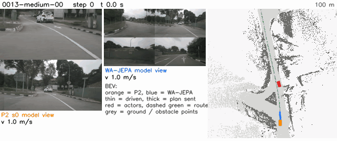
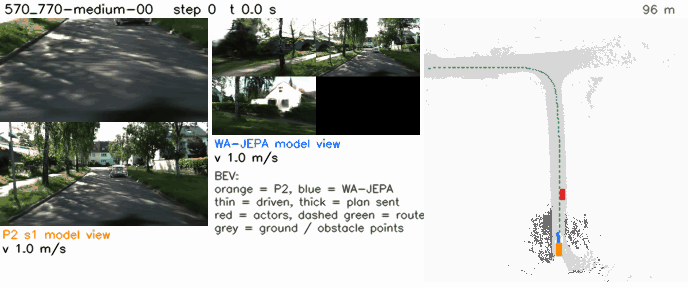

HUGSIM 64: P2 vs WA-JEPA per scenario
64 scenarios (derot_all64), one closed-loop run per arm and scenario, 400-step cap (0.25 s steps). P2 = seed mean of P2-F-s0 / P2-F-s1, P0 = shipped weights through the parity path, both under the spec preset (tree opctrl, openpilot lateral path) unless marked exam (tree fixed, PR #57 controller); WA-JEPA = its single run (GT route command and ego state), the same row for both presets. End class as pp_hugsim_report.py: spin (heading error ≥ 60° vs the recorded route) takes precedence over the runner's end: complete, fg_coll (foreground actor), bg_coll (static background), off_route (far from the preset trajectory), stuck (400 steps without ending).
What to look at. Under spec P2 is 0.057 HD below WA-JEPA on the mean, but that is 0.062 of gains minus 0.119 of losses (per-scenario HD, /64): the gap is the net of large offsetting per-scenario differences. Of P2's losses, 48% come from runs that end in fg_coll and 38% from bg_coll (11% off_route); P2 never stays stuck. fg_coll losses are partly offset by scenarios where WA-JEPA ends in fg_coll and P2 scores higher (net -0.033); bg_coll (P2 11 / 11 per seed, WA-JEPA 1) has no offset (net -0.045) and is the largest single net deficit. The table is sorted by P2 - WA-JEPA HD, largest loss first: read down the P2 class column against the WA-JEPA class column. Single runs: the rerun spread is about 0.2 HD per scenario, so single rows are noisy; the sums are the evidence.
Which P2 failure types make the HD gap
Attribution rule: for each P2 seed and scenario, a loss max(0, HDWA-JEPA - HDP2 seed) is booked to that seed's end class, and a gain max(0, HDP2 seed - HDWA-JEPA) to WA-JEPA's end class there; each seed weighs 1/2 and sums are divided by 64, so (gains - losses) summed over classes equals the seed-mean HD difference exactly. n = scenario-seed pairs (out of 128).
| class | P2 loss (by P2 class) | n | share of losses | P2 gain (by WA-JEPA class) | n | net |
|---|---|---|---|---|---|---|
| complete | -0.004 | 5 | 3% | +0.030 | 30 | +0.026 |
| fg_coll | -0.057 | 31 | 48% | +0.024 | 31 | -0.033 |
| bg_coll | -0.045 | 14 | 38% | +0.000 | 0 | -0.045 |
| off_route | -0.013 | 6 | 11% | +0.003 | 4 | -0.010 |
| spin | -0.001 | 2 | 1% | +0.005 | 2 | +0.005 |
| total | -0.119 | 58 | 100% | +0.062 | 67 | -0.057 |
| class | P2 loss (by P2 class) | n | share of losses | P2 gain (by WA-JEPA class) | n | net |
|---|---|---|---|---|---|---|
| complete | -0.001 | 2 | 1% | +0.026 | 25 | +0.025 |
| fg_coll | -0.053 | 21 | 39% | +0.046 | 40 | -0.008 |
| bg_coll | -0.036 | 10 | 27% | +0.000 | 0 | -0.036 |
| off_route | -0.012 | 3 | 9% | +0.006 | 2 | -0.007 |
| spin | -0.034 | 17 | 25% | +0.005 | 4 | -0.029 |
| total | -0.137 | 53 | 100% | +0.083 | 71 | -0.055 |
End classes per arm
| arm | complete | fg_coll | bg_coll | off_route | stuck | spin |
|---|---|---|---|---|---|---|
| WA-JEPA (one run) | 28 | 26 | 1 | 5 | 0 | 4 |
| P0 | 9 | 24 | 5 | 2 | 24 | 0 |
| P2-F-s0 | 18 | 30 | 11 | 3 | 0 | 2 |
| P2-F-s1 | 21 | 28 | 11 | 3 | 0 | 1 |
| P2 seed mean | 19.5 | 29 | 11 | 3 | 0 | 1.5 |
| arm | complete | fg_coll | bg_coll | off_route | stuck | spin |
|---|---|---|---|---|---|---|
| WA-JEPA (one run) | 28 | 26 | 1 | 5 | 0 | 4 |
| P0 | 7 | 26 | 7 | 0 | 15 | 9 |
| P2-F-s0 | 20 | 28 | 6 | 2 | 0 | 8 |
| P2-F-s1 | 15 | 28 | 9 | 1 | 0 | 11 |
| P2 seed mean | 17.5 | 28 | 7.5 | 1.5 | 0 | 9.5 |
Per scenario
| # | scenario | dataset | difficulty | P2 - WA-JEPA HD | P2 HD (s0, s1) | P2 RC | P2 end | WA-JEPA HD | WA-JEPA RC | WA-JEPA end | P0 HD | P0 RC | P0 end |
|---|---|---|---|---|---|---|---|---|---|---|---|---|---|
| 1 | 106762673266-hard-00 | waymo | hard | -0.921 | 0.054 (0.044, 0.064) | 0.109 | fg_coll | 0.975 | 1.000 | complete | 0.049 | 0.064 | fg_coll |
| 2 | 1290_1490-medium-01 | kitti360 | medium | -0.825 | 0.148 (0.168, 0.129) | 0.347 | fg_coll | 0.973 | 1.000 | complete | 0.463 | 0.488 | bg_coll |
| 3 | 3000_3200-medium-00 | kitti360 | medium | -0.795 | 0.072 (0.074, 0.071) | 0.322 | bg_coll | 0.867 | 1.000 | complete | 0.274 | 0.281 | stuck |
| 4 | 570_770-easy-00 | kitti360 | easy | -0.748 | 0.203 (0.204, 0.201) | 0.471 | bg_coll / off_route | 0.951 | 1.000 | complete | 0.226 | 0.474 | bg_coll |
| 5 | 570_770-medium-00 | kitti360 | medium | -0.710 | 0.217 (0.226, 0.209) | 0.473 | off_route / bg_coll | 0.927 | 1.000 | complete | 0.211 | 0.471 | bg_coll |
| 6 | 100613054308-hard-00 | waymo | hard | -0.669 | 0.172 (0.162, 0.182) | 0.263 | bg_coll | 0.841 | 1.000 | complete | 0.194 | 0.223 | fg_coll |
| 7 | 0013-medium-00 | nuscenes | medium | -0.632 | 0.239 (0.241, 0.237) | 0.371 | fg_coll | 0.870 | 1.000 | complete | 1.000 | 1.000 | complete |
| 8 | 032-medium-02 | pandaset | medium | -0.565 | 0.379 (0.385, 0.373) | 0.612 | bg_coll | 0.944 | 1.000 | complete | 0.221 | 0.221 | stuck |
| 9 | 124-hard-01 | pandaset | hard | -0.455 | 0.531 (0.067, 0.996) | 0.587 | fg_coll / complete | 0.987 | 1.000 | complete | 0.033 | 0.041 | fg_coll |
| 10 | 095-medium-01 | pandaset | medium | -0.378 | 0.567 (0.565, 0.570) | 0.885 | fg_coll | 0.946 | 1.000 | complete | 0.197 | 0.197 | stuck |
| 11 | 053-medium-02 | pandaset | medium | -0.114 | 0.619 (0.261, 0.978) | 0.744 | fg_coll / complete | 0.734 | 0.944 | fg_coll | 0.704 | 0.704 | stuck |
| 12 | 113792265837-easy-00 | waymo | easy | -0.113 | 0.861 (0.856, 0.867) | 1.000 | complete | 0.975 | 1.000 | complete | 0.112 | 0.112 | stuck |
| 13 | 113-easy-00 | pandaset | easy | -0.097 | 0.687 (0.687, 0.688) | 1.000 | complete | 0.784 | 1.000 | complete | 0.129 | 0.129 | stuck |
| 14 | 0254-hard-00 | nuscenes | hard | -0.065 | 0.037 (0.037, 0.037) | 0.123 | fg_coll | 0.102 | 0.128 | fg_coll | 0.062 | 0.062 | stuck |
| 15 | 0041-medium-00 | nuscenes | medium | -0.058 | 0.166 (0.164, 0.168) | 0.271 | off_route | 0.224 | 0.260 | off_route | 0.130 | 0.130 | stuck |
| 16 | 5980_6180-easy-00 | kitti360 | easy | -0.052 | 0.251 (0.241, 0.260) | 0.354 | off_route | 0.302 | 0.350 | off_route | 0.338 | 0.351 | off_route |
| 17 | 102751446607-medium-01 | waymo | medium | -0.047 | 0.949 (0.947, 0.951) | 0.953 | bg_coll | 0.996 | 1.000 | complete | 0.150 | 0.150 | stuck |
| 18 | 8440_8640-easy-00 | kitti360 | easy | -0.039 | 0.722 (0.700, 0.743) | 0.802 | spin | 0.760 | 0.801 | spin | 0.776 | 0.790 | stuck |
| 19 | 032-medium-00 | pandaset | medium | -0.037 | 0.342 (0.335, 0.349) | 0.501 | fg_coll | 0.379 | 0.448 | spin | 0.126 | 0.126 | stuck |
| 20 | 166085257829-extreme-00 | waymo | extreme | -0.036 | 0.038 (0.039, 0.037) | 0.117 | bg_coll | 0.074 | 0.126 | fg_coll | 0.053 | 0.067 | fg_coll |
| 21 | 0254-extreme-00 | nuscenes | extreme | -0.033 | 0.030 (0.030, 0.030) | 0.102 | fg_coll | 0.062 | 0.090 | fg_coll | 0.030 | 0.035 | fg_coll |
| 22 | 0930-hard-00 | nuscenes | hard | -0.029 | 0.940 (1.000, 0.881) | 1.000 | complete | 0.970 | 1.000 | complete | 0.266 | 0.310 | fg_coll |
| 23 | 152217047339-medium-00 | waymo | medium | -0.026 | 0.225 (0.250, 0.200) | 0.381 | bg_coll | 0.251 | 0.251 | off_route | 0.125 | 0.125 | stuck |
| 24 | 0528-medium-00 | nuscenes | medium | -0.020 | 0.080 (0.080, 0.080) | 0.247 | fg_coll | 0.100 | 0.269 | fg_coll | 0.153 | 0.153 | stuck |
| 25 | 3400_3600-hard-00 | kitti360 | hard | -0.017 | 0.055 (0.056, 0.053) | 0.249 | fg_coll | 0.072 | 0.187 | fg_coll | 0.798 | 0.815 | off_route |
| 26 | 2510_2710-hard-00 | kitti360 | hard | -0.008 | 0.000 (0.000, 0.000) | 0.061 | fg_coll | 0.008 | 0.029 | spin | 0.003 | 0.042 | stuck |
| 27 | 3400_3600-extreme-00 | kitti360 | extreme | -0.005 | 0.000 (0.000, 0.000) | 0.094 | fg_coll | 0.005 | 0.067 | fg_coll | 0.020 | 0.045 | fg_coll |
| 28 | 770_970-extreme-00 | kitti360 | extreme | -0.003 | 0.021 (0.022, 0.020) | 0.190 | fg_coll | 0.024 | 0.125 | fg_coll | 0.012 | 0.126 | fg_coll |
| 29 | 250_450-hard-00 | kitti360 | hard | -0.002 | 0.007 (0.004, 0.009) | 0.064 | fg_coll | 0.009 | 0.046 | fg_coll | 0.000 | 0.031 | fg_coll |
| 30 | 2510_2710-extreme-00 | kitti360 | extreme | -0.001 | 0.006 (0.005, 0.007) | 0.088 | fg_coll | 0.007 | 0.062 | fg_coll | 0.005 | 0.040 | fg_coll |
| 31 | 5980_6180-extreme-00 | kitti360 | extreme | -0.000 | 0.007 (0.009, 0.006) | 0.105 | fg_coll | 0.008 | 0.074 | fg_coll | 0.004 | 0.063 | fg_coll |
| 32 | 6580_6780-medium-01 | kitti360 | medium | +0.000 | 0.000 (0.000, 0.000) | 0.043 | bg_coll | 0.000 | 0.044 | bg_coll | 0.003 | 0.045 | bg_coll |
| 33 | 144248042870-extreme-00 | waymo | extreme | +0.000 | 0.000 (0.000, 0.001) | 0.031 | fg_coll | 0.000 | 0.032 | fg_coll | 0.000 | 0.011 | fg_coll |
| 34 | 0138-extreme-00 | nuscenes | extreme | +0.002 | 0.078 (0.075, 0.080) | 0.168 | fg_coll | 0.076 | 0.124 | fg_coll | 0.048 | 0.057 | fg_coll |
| 35 | 053-extreme-02 | pandaset | extreme | +0.005 | 0.034 (0.034, 0.034) | 0.137 | fg_coll | 0.029 | 0.077 | fg_coll | 0.030 | 0.079 | fg_coll |
| 36 | 150623512729-medium-01 | waymo | medium | +0.005 | 0.997 (0.998, 0.996) | 1.000 | complete | 0.992 | 1.000 | complete | 0.088 | 0.088 | stuck |
| 37 | 0411-medium-00 | nuscenes | medium | +0.005 | 0.150 (0.147, 0.153) | 0.256 | fg_coll | 0.145 | 0.258 | fg_coll | 0.062 | 0.062 | stuck |
| 38 | 021-extreme-02 | pandaset | extreme | +0.008 | 0.025 (0.027, 0.023) | 0.053 | fg_coll | 0.017 | 0.055 | fg_coll | 0.020 | 0.026 | fg_coll |
| 39 | 150623512729-extreme-00 | waymo | extreme | +0.013 | 0.044 (0.047, 0.041) | 0.119 | fg_coll | 0.030 | 0.142 | fg_coll | 0.054 | 0.072 | fg_coll |
| 40 | 0013-extreme-00 | nuscenes | extreme | +0.021 | 0.024 (0.024, 0.025) | 0.089 | fg_coll | 0.003 | 0.115 | fg_coll | 0.015 | 0.031 | fg_coll |
| 41 | 0166-easy-00 | nuscenes | easy | +0.032 | 1.000 (1.000, 1.000) | 1.000 | complete | 0.968 | 1.000 | complete | 1.000 | 1.000 | complete |
| 42 | 3000_3200-hard-00 | kitti360 | hard | +0.032 | 0.056 (0.058, 0.053) | 0.329 | bg_coll | 0.023 | 0.101 | fg_coll | 0.110 | 0.317 | bg_coll |
| 43 | 398895700423-easy-00 | waymo | easy | +0.034 | 1.000 (1.000, 1.000) | 1.000 | complete | 0.966 | 1.000 | complete | 0.126 | 0.126 | stuck |
| 44 | 0167-easy-00 | nuscenes | easy | +0.040 | 1.000 (1.000, 1.000) | 1.000 | complete | 0.960 | 1.000 | complete | 1.000 | 1.000 | complete |
| 45 | 034-hard-01 | pandaset | hard | +0.048 | 0.112 (0.108, 0.115) | 0.259 | fg_coll | 0.064 | 0.184 | fg_coll | 0.812 | 0.845 | stuck |
| 46 | 152217047339-extreme-00 | waymo | extreme | +0.049 | 0.052 (0.050, 0.053) | 0.164 | fg_coll | 0.003 | 0.154 | fg_coll | 0.048 | 0.120 | fg_coll |
| 47 | 0418-hard-00 | nuscenes | hard | +0.053 | 0.276 (0.269, 0.282) | 1.000 | complete | 0.223 | 1.000 | complete | 0.002 | 0.181 | stuck |
| 48 | 0528-extreme-00 | nuscenes | extreme | +0.061 | 0.103 (0.095, 0.111) | 0.281 | fg_coll | 0.042 | 0.294 | fg_coll | 0.091 | 0.142 | fg_coll |
| 49 | 095-extreme-01 | pandaset | extreme | +0.068 | 0.080 (0.112, 0.049) | 0.167 | fg_coll | 0.013 | 0.139 | fg_coll | 0.284 | 0.318 | fg_coll |
| 50 | 034-hard-00 | pandaset | hard | +0.068 | 0.105 (0.115, 0.096) | 0.245 | fg_coll | 0.037 | 0.230 | fg_coll | 0.071 | 0.083 | fg_coll |
| 51 | 132384196576-medium-01 | waymo | medium | +0.074 | 0.987 (0.989, 0.984) | 1.000 | complete | 0.912 | 1.000 | complete | 0.106 | 0.106 | stuck |
| 52 | 0411-easy-00 | nuscenes | easy | +0.079 | 0.888 (0.871, 0.905) | 1.000 | complete | 0.809 | 1.000 | complete | 0.885 | 1.000 | complete |
| 53 | 0411-hard-00 | nuscenes | hard | +0.079 | 0.888 (0.871, 0.905) | 1.000 | complete | 0.809 | 1.000 | complete | 0.885 | 1.000 | complete |
| 54 | 164701907483-hard-00 | waymo | hard | +0.086 | 0.430 (0.433, 0.427) | 0.480 | bg_coll | 0.344 | 0.364 | off_route | 0.163 | 0.163 | stuck |
| 55 | 164701907483-easy-00 | waymo | easy | +0.086 | 0.441 (0.435, 0.447) | 0.469 | bg_coll | 0.355 | 0.358 | off_route | 0.107 | 0.107 | stuck |
| 56 | 881121006469-hard-00 | waymo | hard | +0.090 | 0.363 (0.349, 0.376) | 0.473 | fg_coll | 0.272 | 0.467 | fg_coll | 0.341 | 0.404 | fg_coll |
| 57 | 124-extreme-01 | pandaset | extreme | +0.092 | 0.998 (1.000, 0.996) | 1.000 | complete | 0.906 | 1.000 | complete | 0.097 | 0.112 | fg_coll |
| 58 | 040-easy-00 | pandaset | easy | +0.093 | 0.999 (0.997, 1.000) | 1.000 | complete | 0.906 | 1.000 | complete | 1.000 | 1.000 | complete |
| 59 | 322492347634-easy-00 | waymo | easy | +0.193 | 0.981 (0.997, 0.965) | 1.000 | complete | 0.788 | 1.000 | complete | 0.770 | 0.770 | stuck |
| 60 | 034-easy-00 | pandaset | easy | +0.235 | 0.778 (0.771, 0.785) | 1.000 | complete | 0.543 | 1.000 | complete | 0.892 | 0.926 | stuck |
| 61 | 039-easy-00 | pandaset | easy | +0.281 | 1.000 (1.000, 1.000) | 1.000 | complete | 0.719 | 1.000 | complete | 1.000 | 1.000 | complete |
| 62 | 2800_3000-easy-00 | kitti360 | easy | +0.327 | 0.669 (0.575, 0.763) | 1.000 | spin / complete | 0.342 | 0.639 | spin | 0.794 | 1.000 | complete |
| 63 | 0051-easy-00 | nuscenes | easy | +0.618 | 1.000 (1.000, 1.000) | 1.000 | complete | 0.382 | 1.000 | complete | 1.000 | 1.000 | complete |
| 64 | 090-hard-01 | pandaset | hard | +0.968 | 1.000 (1.000, 1.000) | 1.000 | complete | 0.032 | 0.109 | fg_coll | 0.033 | 0.042 | fg_coll |
The same under preset exam
| # | scenario | dataset | difficulty | P2 - WA-JEPA HD | P2 HD (s0, s1) | P2 RC | P2 end | WA-JEPA HD | WA-JEPA RC | WA-JEPA end | P0 HD | P0 RC | P0 end |
|---|---|---|---|---|---|---|---|---|---|---|---|---|---|
| 1 | 106762673266-hard-00 | waymo | hard | -0.929 | 0.045 (0.048, 0.042) | 0.107 | fg_coll | 0.975 | 1.000 | complete | 0.050 | 0.063 | fg_coll |
| 2 | 1290_1490-medium-01 | kitti360 | medium | -0.821 | 0.152 (0.158, 0.145) | 0.315 | fg_coll | 0.973 | 1.000 | complete | 0.417 | 0.471 | bg_coll |
| 3 | 3000_3200-medium-00 | kitti360 | medium | -0.784 | 0.083 (0.075, 0.092) | 0.327 | bg_coll | 0.867 | 1.000 | complete | 0.046 | 0.145 | fg_coll |
| 4 | 570_770-easy-00 | kitti360 | easy | -0.743 | 0.208 (0.213, 0.203) | 0.504 | bg_coll | 0.951 | 1.000 | complete | 0.224 | 0.500 | bg_coll |
| 5 | 570_770-medium-00 | kitti360 | medium | -0.732 | 0.195 (0.190, 0.201) | 0.498 | off_route | 0.927 | 1.000 | complete | 0.226 | 0.501 | bg_coll |
| 6 | 032-medium-02 | pandaset | medium | -0.661 | 0.283 (0.309, 0.257) | 0.691 | fg_coll / bg_coll | 0.944 | 1.000 | complete | 0.219 | 0.219 | stuck |
| 7 | 095-medium-01 | pandaset | medium | -0.523 | 0.422 (0.421, 0.424) | 0.894 | fg_coll | 0.946 | 1.000 | complete | 0.102 | 0.102 | stuck |
| 8 | 124-hard-01 | pandaset | hard | -0.446 | 0.541 (0.090, 0.991) | 0.587 | fg_coll / complete | 0.987 | 1.000 | complete | 0.037 | 0.047 | fg_coll |
| 9 | 398895700423-easy-00 | waymo | easy | -0.398 | 0.568 (0.995, 0.141) | 0.631 | complete / spin | 0.966 | 1.000 | complete | 0.133 | 0.133 | stuck |
| 10 | 322492347634-easy-00 | waymo | easy | -0.392 | 0.396 (0.437, 0.355) | 0.620 | spin | 0.788 | 1.000 | complete | 0.603 | 0.603 | stuck |
| 11 | 150623512729-medium-01 | waymo | medium | -0.347 | 0.644 (0.428, 0.861) | 0.698 | fg_coll / spin | 0.992 | 1.000 | complete | 0.155 | 0.155 | stuck |
| 12 | 100613054308-hard-00 | waymo | hard | -0.295 | 0.546 (0.939, 0.153) | 0.641 | complete / bg_coll | 0.841 | 1.000 | complete | 0.228 | 0.267 | fg_coll |
| 13 | 040-easy-00 | pandaset | easy | -0.209 | 0.696 (0.684, 0.709) | 0.861 | spin | 0.906 | 1.000 | complete | 0.813 | 0.873 | spin |
| 14 | 164701907483-easy-00 | waymo | easy | -0.209 | 0.146 (0.147, 0.146) | 0.269 | spin | 0.355 | 0.358 | off_route | 0.106 | 0.106 | stuck |
| 15 | 102751446607-medium-01 | waymo | medium | -0.187 | 0.809 (0.862, 0.756) | 0.947 | off_route / spin | 0.996 | 1.000 | complete | 0.148 | 0.274 | spin |
| 16 | 8440_8640-easy-00 | kitti360 | easy | -0.165 | 0.595 (0.531, 0.660) | 0.862 | spin / bg_coll | 0.760 | 0.801 | spin | 0.563 | 0.622 | spin |
| 17 | 113792265837-easy-00 | waymo | easy | -0.155 | 0.820 (0.745, 0.895) | 1.000 | spin | 0.975 | 1.000 | complete | 0.134 | 0.134 | stuck |
| 18 | 124-extreme-01 | pandaset | extreme | -0.152 | 0.754 (0.996, 0.512) | 0.791 | complete / spin | 0.906 | 1.000 | complete | 0.290 | 0.307 | fg_coll |
| 19 | 164701907483-hard-00 | waymo | hard | -0.097 | 0.247 (0.357, 0.137) | 0.529 | spin | 0.344 | 0.364 | off_route | 0.207 | 0.207 | stuck |
| 20 | 0041-medium-00 | nuscenes | medium | -0.087 | 0.137 (0.121, 0.154) | 0.260 | spin / bg_coll | 0.224 | 0.260 | off_route | 0.115 | 0.161 | bg_coll |
| 21 | 132384196576-medium-01 | waymo | medium | -0.084 | 0.829 (0.982, 0.676) | 0.914 | complete / spin | 0.912 | 1.000 | complete | 0.122 | 0.122 | stuck |
| 22 | 113-easy-00 | pandaset | easy | -0.066 | 0.718 (0.739, 0.697) | 1.000 | complete | 0.784 | 1.000 | complete | 0.123 | 0.123 | stuck |
| 23 | 5980_6180-easy-00 | kitti360 | easy | -0.035 | 0.268 (0.274, 0.261) | 0.471 | bg_coll | 0.302 | 0.350 | off_route | 0.322 | 0.431 | bg_coll |
| 24 | 0254-extreme-00 | nuscenes | extreme | -0.032 | 0.031 (0.032, 0.030) | 0.103 | fg_coll | 0.062 | 0.090 | fg_coll | 0.835 | 1.000 | spin |
| 25 | 3400_3600-hard-00 | kitti360 | hard | -0.016 | 0.056 (0.061, 0.051) | 0.252 | fg_coll | 0.072 | 0.187 | fg_coll | 0.148 | 0.191 | fg_coll |
| 26 | 2510_2710-hard-00 | kitti360 | hard | -0.007 | 0.001 (0.001, 0.001) | 0.061 | fg_coll | 0.008 | 0.029 | spin | 0.067 | 0.100 | spin |
| 27 | 3400_3600-extreme-00 | kitti360 | extreme | -0.005 | 0.000 (0.000, 0.000) | 0.099 | fg_coll | 0.005 | 0.067 | fg_coll | 0.019 | 0.045 | fg_coll |
| 28 | 770_970-extreme-00 | kitti360 | extreme | -0.001 | 0.023 (0.028, 0.018) | 0.192 | fg_coll | 0.024 | 0.125 | fg_coll | 0.009 | 0.128 | fg_coll |
| 29 | 2510_2710-extreme-00 | kitti360 | extreme | -0.000 | 0.006 (0.006, 0.007) | 0.089 | fg_coll | 0.007 | 0.062 | fg_coll | 0.002 | 0.039 | fg_coll |
| 30 | 144248042870-extreme-00 | waymo | extreme | +0.000 | 0.000 (0.000, 0.000) | 0.053 | fg_coll | 0.000 | 0.032 | fg_coll | 0.000 | 0.046 | fg_coll |
| 31 | 6580_6780-medium-01 | kitti360 | medium | +0.000 | 0.000 (0.000, 0.000) | 0.042 | bg_coll | 0.000 | 0.044 | bg_coll | 0.003 | 0.043 | bg_coll |
| 32 | 250_450-hard-00 | kitti360 | hard | +0.001 | 0.010 (0.003, 0.017) | 0.079 | fg_coll | 0.009 | 0.046 | fg_coll | 0.036 | 0.062 | fg_coll |
| 33 | 0138-extreme-00 | nuscenes | extreme | +0.001 | 0.077 (0.077, 0.077) | 0.161 | fg_coll | 0.076 | 0.124 | fg_coll | 0.108 | 0.148 | fg_coll |
| 34 | 5980_6180-extreme-00 | kitti360 | extreme | +0.002 | 0.009 (0.010, 0.009) | 0.117 | fg_coll | 0.008 | 0.074 | fg_coll | 0.013 | 0.072 | fg_coll |
| 35 | 053-extreme-02 | pandaset | extreme | +0.010 | 0.039 (0.044, 0.034) | 0.136 | fg_coll | 0.029 | 0.077 | fg_coll | 0.022 | 0.076 | fg_coll |
| 36 | 021-extreme-02 | pandaset | extreme | +0.010 | 0.027 (0.028, 0.025) | 0.054 | fg_coll | 0.017 | 0.055 | fg_coll | 0.016 | 0.026 | fg_coll |
| 37 | 3000_3200-hard-00 | kitti360 | hard | +0.020 | 0.043 (0.043, 0.044) | 0.207 | fg_coll | 0.023 | 0.101 | fg_coll | 0.066 | 0.182 | fg_coll |
| 38 | 166085257829-extreme-00 | waymo | extreme | +0.021 | 0.095 (0.095, 0.095) | 0.203 | fg_coll | 0.074 | 0.126 | fg_coll | 0.073 | 0.134 | fg_coll |
| 39 | 0411-medium-00 | nuscenes | medium | +0.021 | 0.166 (0.165, 0.167) | 0.258 | fg_coll | 0.145 | 0.258 | fg_coll | 0.074 | 0.074 | stuck |
| 40 | 0013-extreme-00 | nuscenes | extreme | +0.022 | 0.025 (0.024, 0.026) | 0.096 | fg_coll | 0.003 | 0.115 | fg_coll | 0.015 | 0.062 | fg_coll |
| 41 | 0930-hard-00 | nuscenes | hard | +0.030 | 1.000 (1.000, 1.000) | 1.000 | complete | 0.970 | 1.000 | complete | 1.000 | 1.000 | complete |
| 42 | 0166-easy-00 | nuscenes | easy | +0.032 | 1.000 (1.000, 1.000) | 1.000 | complete | 0.968 | 1.000 | complete | 1.000 | 1.000 | complete |
| 43 | 0167-easy-00 | nuscenes | easy | +0.040 | 1.000 (1.000, 1.000) | 1.000 | complete | 0.960 | 1.000 | complete | 0.691 | 0.691 | stuck |
| 44 | 034-hard-01 | pandaset | hard | +0.047 | 0.111 (0.110, 0.111) | 0.256 | fg_coll | 0.064 | 0.184 | fg_coll | 0.142 | 0.173 | fg_coll |
| 45 | 095-extreme-01 | pandaset | extreme | +0.052 | 0.065 (0.081, 0.048) | 0.165 | fg_coll | 0.013 | 0.139 | fg_coll | 0.075 | 0.134 | fg_coll |
| 46 | 150623512729-extreme-00 | waymo | extreme | +0.056 | 0.086 (0.087, 0.086) | 0.134 | fg_coll | 0.030 | 0.142 | fg_coll | 0.049 | 0.094 | fg_coll |
| 47 | 152217047339-extreme-00 | waymo | extreme | +0.063 | 0.066 (0.060, 0.072) | 0.184 | fg_coll | 0.003 | 0.154 | fg_coll | 0.058 | 0.149 | fg_coll |
| 48 | 0411-hard-00 | nuscenes | hard | +0.064 | 0.873 (0.885, 0.861) | 1.000 | complete | 0.809 | 1.000 | complete | 0.888 | 1.000 | complete |
| 49 | 0528-extreme-00 | nuscenes | extreme | +0.078 | 0.120 (0.113, 0.127) | 0.275 | fg_coll | 0.042 | 0.294 | fg_coll | 0.120 | 0.230 | fg_coll |
| 50 | 0411-easy-00 | nuscenes | easy | +0.089 | 0.898 (0.909, 0.886) | 1.000 | complete | 0.809 | 1.000 | complete | 0.888 | 1.000 | complete |
| 51 | 0418-hard-00 | nuscenes | hard | +0.095 | 0.318 (0.306, 0.331) | 1.000 | complete | 0.223 | 1.000 | complete | 0.217 | 1.000 | complete |
| 52 | 032-medium-00 | pandaset | medium | +0.102 | 0.481 (0.551, 0.412) | 0.566 | bg_coll / fg_coll | 0.379 | 0.448 | spin | 0.119 | 0.119 | stuck |
| 53 | 034-hard-00 | pandaset | hard | +0.117 | 0.154 (0.158, 0.151) | 0.267 | fg_coll | 0.037 | 0.230 | fg_coll | 0.151 | 0.209 | fg_coll |
| 54 | 053-medium-02 | pandaset | medium | +0.127 | 0.860 (0.743, 0.978) | 1.000 | complete | 0.734 | 0.944 | fg_coll | 0.432 | 0.441 | spin |
| 55 | 0013-medium-00 | nuscenes | medium | +0.130 | 1.000 (1.000, 1.000) | 1.000 | complete | 0.870 | 1.000 | complete | 0.059 | 0.109 | spin |
| 56 | 2800_3000-easy-00 | kitti360 | easy | +0.194 | 0.536 (0.539, 0.532) | 0.905 | bg_coll | 0.342 | 0.639 | spin | 0.550 | 0.907 | bg_coll |
| 57 | 034-easy-00 | pandaset | easy | +0.222 | 0.766 (0.752, 0.780) | 1.000 | complete | 0.543 | 1.000 | complete | 0.933 | 0.968 | stuck |
| 58 | 039-easy-00 | pandaset | easy | +0.238 | 0.957 (0.969, 0.945) | 1.000 | complete | 0.719 | 1.000 | complete | 1.000 | 1.000 | complete |
| 59 | 152217047339-medium-00 | waymo | medium | +0.346 | 0.597 (0.210, 0.983) | 0.610 | spin / complete | 0.251 | 0.251 | off_route | 0.083 | 0.160 | spin |
| 60 | 0254-hard-00 | nuscenes | hard | +0.391 | 0.493 (0.942, 0.044) | 0.561 | complete / fg_coll | 0.102 | 0.128 | fg_coll | 0.063 | 0.063 | stuck |
| 61 | 0528-medium-00 | nuscenes | medium | +0.439 | 0.540 (0.908, 0.172) | 0.627 | complete / fg_coll | 0.100 | 0.269 | fg_coll | 0.043 | 0.145 | spin |
| 62 | 0051-easy-00 | nuscenes | easy | +0.589 | 0.972 (0.961, 0.983) | 1.000 | complete | 0.382 | 1.000 | complete | 0.969 | 1.000 | complete |
| 63 | 090-hard-01 | pandaset | hard | +0.705 | 0.738 (1.000, 0.475) | 0.802 | complete / spin | 0.032 | 0.109 | fg_coll | 0.030 | 0.058 | fg_coll |
| 64 | 881121006469-hard-00 | waymo | hard | +0.718 | 0.991 (0.989, 0.993) | 1.000 | complete | 0.272 | 0.467 | fg_coll | 0.366 | 0.421 | fg_coll |
Clips: typical losses
Selection rule (preset spec): for each P2 loss class, in order of its loss sum, the scenarios where WA-JEPA beats the P2 seed mean by ≥ 0.2 HD and at least one P2 seed ended in that class; the clip is the scenario at the (lower) median of that loss, i.e. typical, not worst, and shows the seed that ended in the class (s0 if both). Panels: P2 model view = the openpilot road (top) and wide (bottom) model frames of the current step, rebuilt offline from the logged front cameras with the agent's own frame builder (jevdrive.hugsim_zs.OpenpilotFrames); WA-JEPA model view = the camera mosaic its client saved (front-left, front / front-right, back); BEV = scene frame, both egos (P2 orange, WA-JEPA blue) with their driven paths and the 3 s plan each sent to the simulator, scripted actors (red), the recorded route (dashed green), ground (light) and obstacle points (dark) from the scene's point clouds. One GIF frame per 0.25 s step, played at 8 fps (2x real time); a run that has ended is frozen and marked. The two runs are separate episodes from the same start, aligned by step.



Sources: experiments/op_parity/results/hugsim_full/extract.csv, experiments/hugsim/results/hugsim-exam/scored_wajepa.csv; generator experiments/op_parity/scripts/pp_gap_hugsim.py.